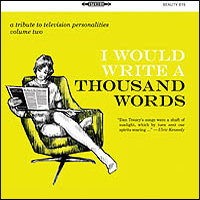
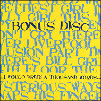
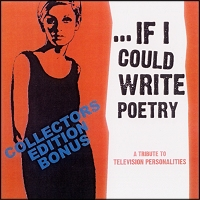
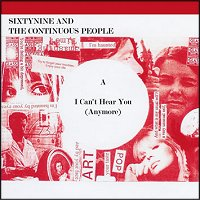
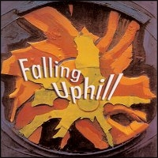
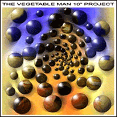
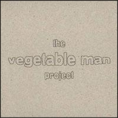
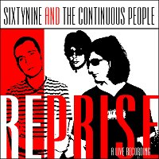
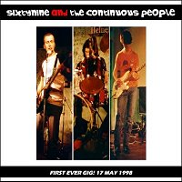

|


|
VV.AA. - I Would Write A Thousand Words:
A Tribute To Television Personalites - Volume Two
CD+CDR (The Beautiful Music - Canada - February 2007)
The Shambles - If I Could Write Poetry
Summer Factory - Look Back In Anger
Semion - The Prettiest Girl In The World
The Cult 45's - Silly Girl
Pacific Radio - This Time There's No Happy Ending
The Groovy Cellar - Say You Won't Cry
Superczar - There's A Cloud Over Liverpool
Thy Surfyn Eyes - La Grande Illusion
The Airwaves - Part Time Punks
The Mandervilles - Where's Bill Grundy Now (Slow Mix)
Swell Maps - 14th Floor
The Paisley Shirts - The Dream Inspires
The Loch Ness Mouse - Favorite Films
Jonathan Caws-Elwitt - Geoffrey Ingram
The Nomen - Mysterious Ways
Phil Wilson - God Snaps His Fingers
Pub Fiction - Three Wishes
BMX Bandits - Girl At The Bus Stop
The Legend! - Look Back In Anger (Live)
Nikki Sudden - If I Could Write Poetry
The second volume in the ongoing TVPs tribute series.
The Bartlebees / The Silly Pillows - The Girl With The Foam Repellent Lips (Live)
The Painted Word - Someone To Share My Life With
Roy Moller - Magnificent Dreams
Chach - The Glittering Prizes
Out Of Nowhere - 14th Floor (Psychedelic Electro Mod Mix)
The Catalysts - Where The Rainbow Ends
Tim Chaplin - Stop And Smell The Roses
The Container Drivers - A Picture Of Dorian Gray (Live)
The Brush - If I Could Write Poetry
Two Angry Men - Part Time Punks (Quiet Version)
Colin Swan - I Know Where Syd Barrett Lives
Not TVP's - This Angry Silence
Thy Surfyn Eyes - Part Time Pops
Windless Air Music - Magnificent Dreams
Sixtynine And The Continuous People - Scream Quietly (Live)
The Meek - All My Dreams Are Dead.
S-T - I Know Where S-T Lives
Television Personalities - Honey For The Bears (Live)
Free bonus CDR, limited to 200 copies.
|
|
|


|
VV.AA. - If I Could Write Poetry:
A Tribute To Television Personalites
CD+CDR (The Beautiful Music - Canada - May 2005)
Lovejoy - Someone To Share My Life With
Nikki Sudden - If I Could Write Poetry (Texas Mix)
The Higher Elevations - The Engine Driver Song
The Baskervilles - La Grande Illusion
The Thanes - World Of Pauline Lewis
Bartlebees - And Then Suddenly
The Mandervilles - Where's Bill Grundy Now?
Armitage Shanks - 14th Floor (Slight Return)
Sixtynine & The Continuous People - The Girl Who Had Everything
Miniskirt - A Good & Faithful Servant
The Paisley Shirts - Sad Mona Lisa
Spiggott v Zane - Salvadore Dali's Garden Party
The Container Drivers - A Picture Of Dorian Gray
Woog Riots - TV Personalities
No Men - Part Time Punks
Darrell Whitbeck - Stop & Smell The Roses
Nick Danger & the DCR - Diary Of A Young Man
The Happy Couple - The Dream Inspires
The Void - In A Perfumed Garden
Biff Bang Pow - Someone To Share My Life With
The long awaited Television Personalities tribute!
No Men - I Know Where Syd Barrett Lives
Two Angry Men - This Angry Silence
The Container Drivers - Part Time Punks (Live)
Thy Surfin' Eyes - Anxiety Block
Nick Danger & The DCR - Diary Of A Young Man (Live)
Sixtynine & The Continuous People - Salvador Dali's Garden Party (Live)
Laverne & Shirley Featuring Merle - Part Time Punks
The Baskervilles - Parties In Chelsea
Colin Swan - A Picture Of Dorian Grey
NotTVPs - Three Wishes
The Legend! - Someone To Share My Life With (Live)
Television Personalities - Silly Girl (Live)
Free bonus CDR, limited to 100 copies.
|
|
|

|
I Can't Hear You (Anymore)
Shadows That Haunt Me
7" Single (Félicité - Germany - July 2004)
"I Can't Hear You (Anymore)" is a Continuous People original.
"Shadows That Haunt Me" is an unreleased Television Personalities song,
performed only once by Dan Treacy at a solo acoustic live gig in 1988.
|
|
|

|
VV.AA. - Falling Uphill
CD (Windless Air - USA - July 2004)
BARBARA MANNING & THE GO-LUCKYS! - Dreaming (USA)
BASKERVILLES - John Riley And The Housewives Who Love Him (USA)
TELEVISION PERSONALITIES - Virgin And A Whore (UK)
JOWE HEAD - Serpentine (UK)
WOOG RIOTS - Mrs. Pharmacist (Germany)
KATZE - People Jumping (Germany)
THE BIG EMPTY - Your Old Volvo (USA)
THE LONG DECLINE - Uncertainty (UK)
SIXTYNINE AND THE CONTINUOUS PEOPLE - Sadness In Disguise (ITALY)
AUNT WAYNE - Clancy The Leprechaun (USA)
SWEDISH WHISTLER - Beautiful Day (Sweden)
ANGEL RACING FOOD - Guinea Pig (UK)
MILTON FISHER - Something Like Nathalie (Germany)
DARRELL WHITBECK - Around The World (USA)
OLIVES HAIRY CUSTARD - Whipper Snappers (UK)
AMANDA BY NIGHT - Strange, Strange Drive (USA)
THE CONTAINER DRIVERS - The Girl On The Bus (UK)
THE BARTLEBEES - Comin' Out, Stayin' In (Germany)
ROCKFORMATION DISKOKUGEL - Tagebuch (Germany)
SUMMER FACTORY - Saturday Morning Hangover Tune (France)
Lovingly produced and exhaustively compiled international indie-pop & indie-rock compilation.
|
|
|

|
VV.AA. - The Vegetable Man 10" Project
10" (O.V.N.I - Italy - November 2003)
60 bands from around the world perform Syd Barrett’s
"Vegetable Man" in 10 seconds! Very experimental....
|
|
|

|
VV.AA. - The Vegetable Man Project
CD (O.V.N.I - Italy - December 2002)
20 bands (15 from Italy and 5 from the USA)
perform Syd Barrett's "Vegetable Man":
Mandragora / Sixtynine And The Continuous People / Effetto Doppler / Delavega / Castemore / Turk182 / Gastel Etzwane / Potage / Annavoid / Max / Pulp_ito / Yulan / Gnu / Menazone / Donna Vegetale / Nick Bensen / Kable / Linus Pauling Quartet / Tom Carter / Drona Parva.
Gatefold cardboard sleeve. The first 300 copies are hand painted.
|
|
|

|
VV.AA. - On A Distant Shore
(A Tribute To Syd Barrett)
CDR (Windless Air - USA - December 2001)
The Whole Bit - Danboid
Lucifer Sam - Sixtynine And The Continuous People
Opel - TranselemenT
No Good Trying - Woundman
Love Song - Darrell W.
Flaming - Full Dimensional
If It's In You - Captain Wasp
Lucifer Sam - Sam From Rochdale
Octopus - Full Dimensional
Terrapin - Neptunes Closet
I Know Where Syd Barrett Lives - Sixtynine And The C. People
International tribute to Syd Barrett.
|
|
|

|
Reprise (A Live Recording)
CDR (Mind's Eye Demo 002 - August 1999)
Recorded live on 24/07/99
david hockney’s diaries / the girl who had everything / take it / the painted word (reprise)
All songs by Dan Treacy (Television Personalities)
except "Take It", by Sekula, Canham, Taylor e Durrant (14 Iced Bears)
|
|
|

|
First Ever Gig! 17 May 1998
CDR (Mind's Eye Demo 001 - December '98)
Recorded live on 17/05/98
scream quietly / the painted word / la grande illusion
king and country / painter man / a long time gone / brian’s magic car
All songs by Dan Treacy (Television Personalities)
except "Painter Man", by Pickett / Phillips (Creation)
|
|